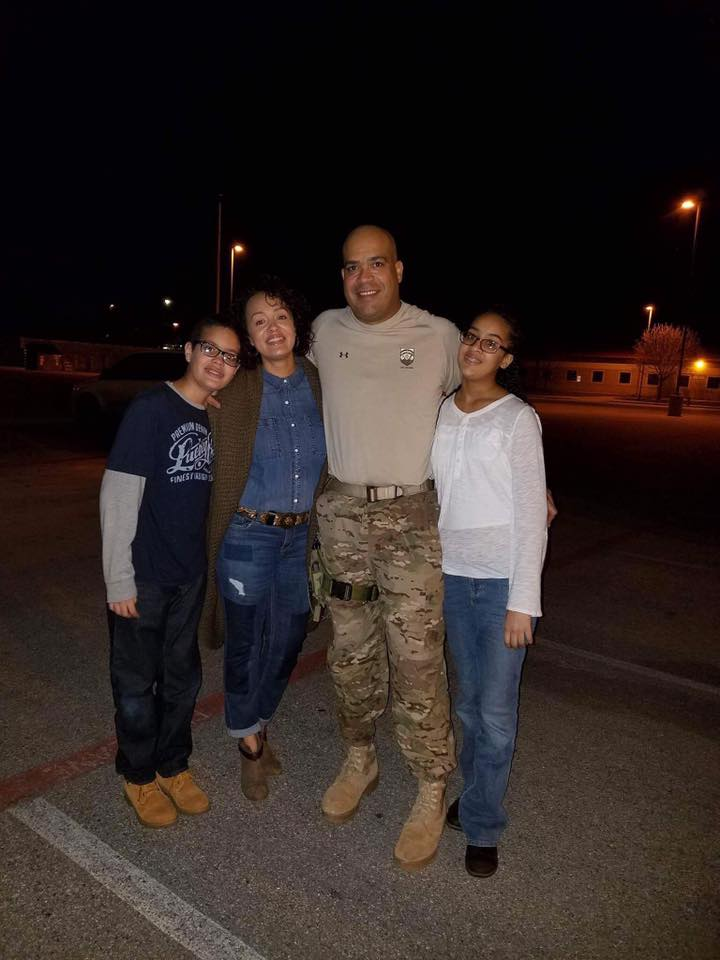
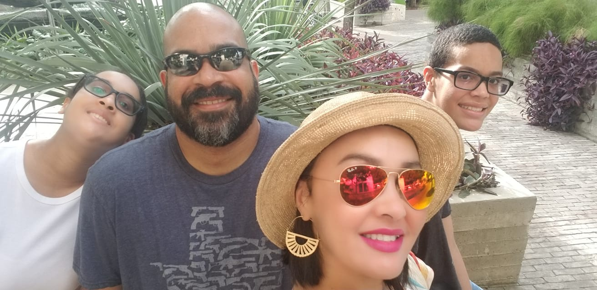
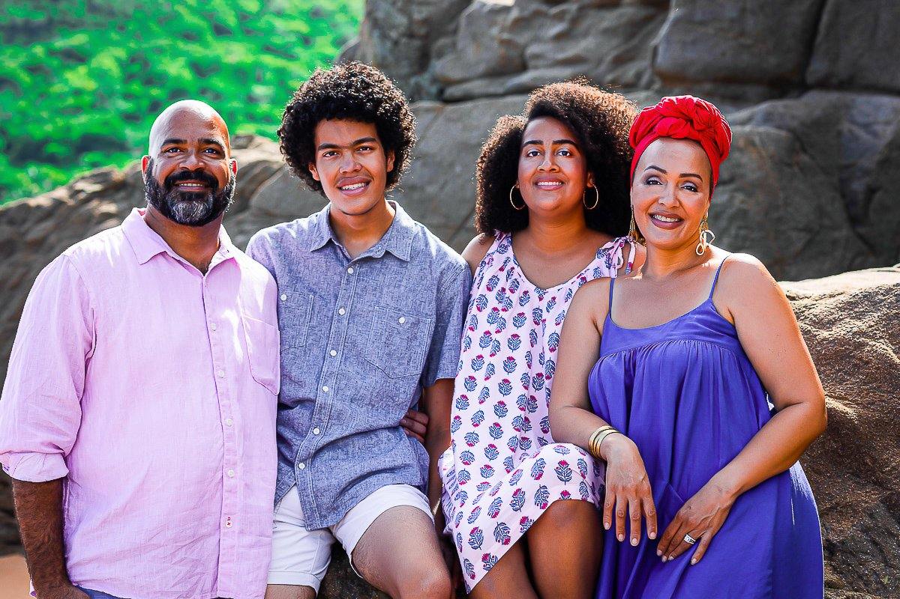

This is a picture of my family the morning I left for my last deployment to Iraq in early 2017. My wife and two youngest children are the most important people in my life.
My wife graduated from culinary school in 1999, a month before our wedding. I was serving on active duty in the US Army and she put her career on hold to follow me around. She supported my career development and growth for the next 20 years until I retired in 2019. In 2015 she started her first blog, then rebranded herself and began Sense & Edibility
My wife and I decided we would relocate to San Antonio from Fort Hood, TX. We both loved the city and had many friends who lived there. I was hired by a local company and, after unpacking some of our things into our apartment and stuffing the rest into a storage unit, we began exploring our new location. Part of our "exploration" included finding a place to build our forever home. We really did not know what to expect, but managed to find a great lot and moved into our last house April of 2021, 23-months after arriving.
My wife's blog has grown exponentially. She continues to build her online cookbook and is loving it. Our 17-year-old twins are first-year students at UTSA. My son is pursuing a degree in electrical engineering and my daughter in biochemistry. They are our legacy and my wife and I have worked hard with the focus to give them the springboard into adulthood neither one of us had. When most parents are becoming empty nesters, we continue to remain engaged in their lives, hoping to provide sound guidance and help them avoid the pitfalls we fell into. I am pursuinig an Associates in Applied Sciences in Digital Media and will join my wife's team and with the hope to help grow her company further
